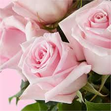
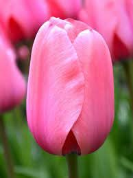
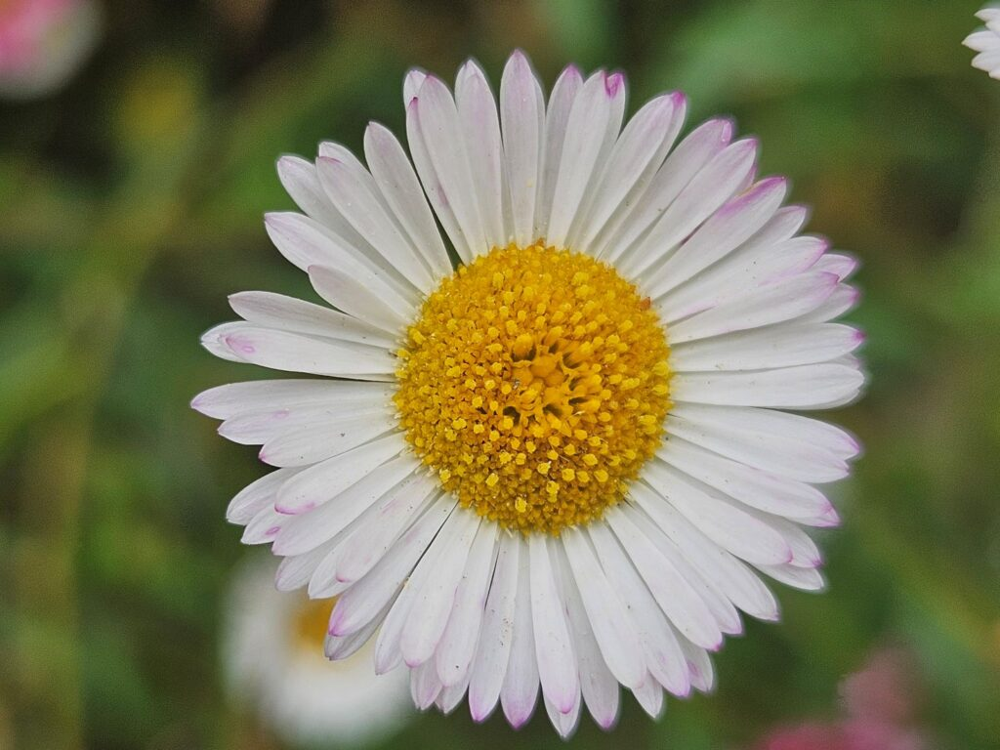
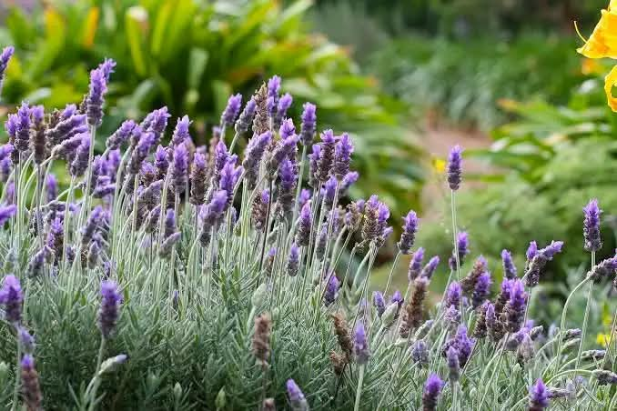

🌷 Bunga Sakura

Bunga sakura adalah bunga khas Jepang. Bunga ini memiliki warna merah muda yang indah. Sakura biasanya mekar pada musim semi. Banyak orang datang untuk melihat keindahan bunga sakura. Bunga ini menjadi simbol keindahan dan kehidupan.
🌸 Pink Rose

Bunga mawar pink memiliki warna yang cantik. Bunga ini melambangkan kasih sayang dan kebahagiaan. Mawar sering digunakan sebagai hiasan taman. Aromanya harum dan bentuknya sangat indah. Banyak orang menyukai bunga mawar pink.
🌺 Tulip

Bunga tulip merupakan bunga yang sangat indah. Tulip memiliki berbagai macam warna. Bentuk bunganya unik dan menarik. Bunga ini sering ditemukan di taman. Tulip menjadi salah satu bunga favorit banyak orang.
🌼 Daisy

Bunga daisy memiliki bentuk yang sederhana. Bunga ini memiliki kelopak yang cantik. Daisy sering digunakan sebagai hiasan taman. Warnanya membuat suasana menjadi ceria. Bunga ini terlihat sangat menarik.
🌹 Lavender

Lavender adalah bunga yang memiliki warna ungu. Bunga ini terkenal dengan aromanya yang harum. Lavender sering digunakan sebagai tanaman hias. Bunga ini membuat taman terlihat lebih indah. Banyak orang menyukai lavender.